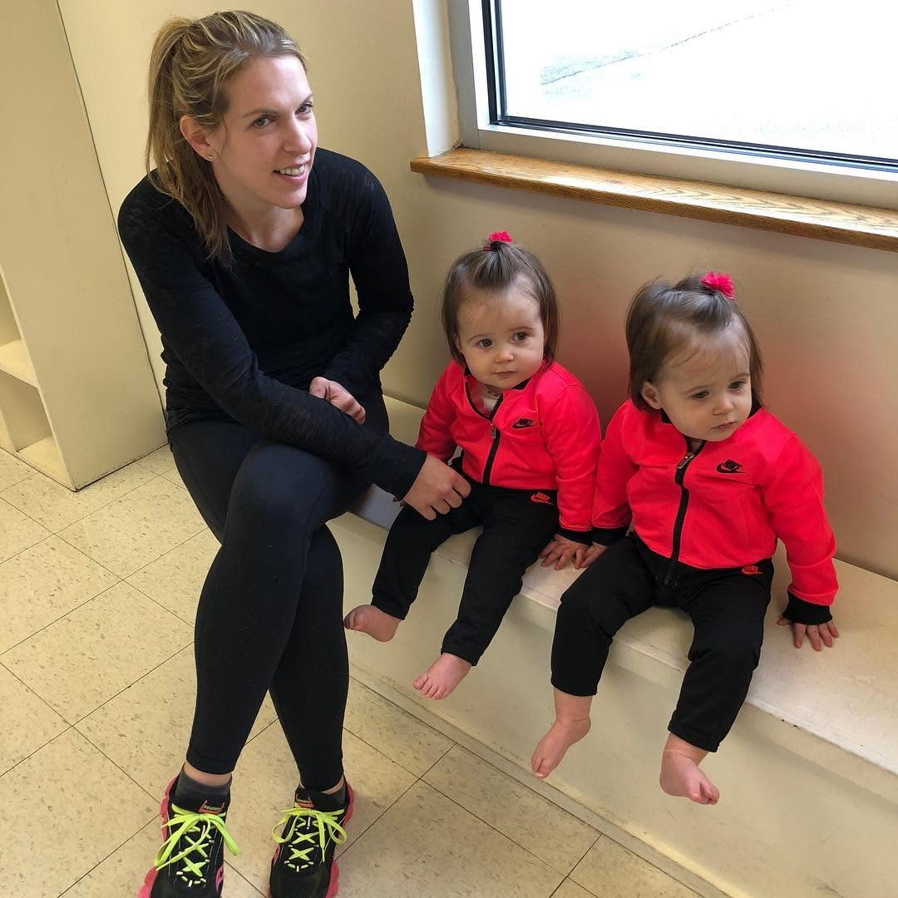
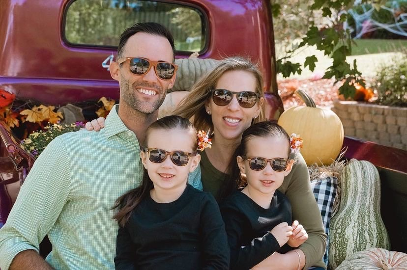

Hi, I'm Rachel. I believe that the most powerful changes in life come from small, intentional decisions — not dramatic overhauls. This blog is my way of sharing what actually works, what I've learned through living, and the things that have genuinely improved my life.
💛 Mother of Two Girls🏃 Athlete🎯 Certified Coach💍 Wife📖 Lifelong Learner🌿 Wellness Enthusiast
Coaching, parenting twins, training — my energy can't be inconsistent. Ketones changed how I feel day to day in the quiet, consistent way that actually sticks.
Personal reflections, stories, lessons, and observations from everyday life.
Mindset⏱ 4 min read
Are You as Safe as You Think?
I was the top earner. Multiple Presidents Club winner. Then I got laid off. That final layoff was the last time I was willing to build my life on something I didn't control.
Growing up, money was a constant weight. I watched my mom quietly remove items from the cart because the total was too high. I promised myself my past would not dictate my future.
"How am I going to tell my husband?" We were finally climbing out of a dark financial hole — and then, just like that, it was gone. What happened next surprised me most.
"I'm working 12-hour days, barely making ends meet." A friend called me in tears. I'd been in her exact shoes. Here's what I told her — and what I wish I'd known sooner.
Get thoughtful insights, personal stories, and trusted recommendations delivered directly to your inbox.
No spam, everUnsubscribe anytimeDelivered weekly
Community Love
Words From Our Community
★★★★★
Rachel's writing on balancing ambition with motherhood completely shifted how I approach my mornings. I feel less guilty and more intentional every single day.
Sarah M.
Working Mom of Three
★★★★★
I started the morning planner Rachel recommended and within three weeks my productivity doubled. I didn't believe that was possible, but here we are.
Jennifer L.
Entrepreneur & Coach
★★★★★
Rachel doesn't just share advice — she shares herself. Reading her story about slowing down gave me permission to stop running from myself. Thank you.
Maya T.
Yoga Instructor & Mom
Hey There!
My Name Is Rachel
Mother of twin girls, wife to Mike, coach, and someone who chose a completely different path — on purpose. This isn't a highlight reel. It's the real story.
Who She Is
Real Life. Real Lessons. Real Recommendations.
I'm Rachel — a certified life coach, competitive runner, wife, and mom to two wild, wonderful girls. I started this blog because I kept getting asked the same question by clients and friends: "How do you do it all?"
The honest answer is: I don't. But I've learned how to do what matters, with less guilt and more grace. And I wanted to share that.
This blog is a collection of my real experiences — the messy ones, the beautiful ones, the lessons I wish someone had told me sooner — and the products and tools that have genuinely made my life better.

Life As A Mom
Motherhood Changed Everything I Thought I Knew.
My two girls are my greatest teachers. Before them, I thought I had patience, discipline, and perspective. Motherhood showed me I was just getting started.
Being a mom has taught me that presence is the rarest gift. That slow mornings are precious. That "enough" is a complete sentence. I write often about what motherhood has taught me — because I believe those lessons belong to all of us, whether you're a parent or not.
Her Coaching Journey
8 Years of Helping People Live with Intention.
I became a certified life coach eight years ago, after going through my own period of deep personal reinvention. I had a successful career, a beautiful family — and felt completely disconnected from myself.
Coaching gave me a framework for living on purpose. Today I work with women who are high-achieving but quietly exhausted, helping them reconnect with what they actually want — and build a life that reflects it.
Athletics & Growth
Running Taught Me More Than Any Book Ever Did.
I've completed three marathons and more half-marathons than I can count. Not because I'm fast — but because I love what the training does to my mind.
There's something about pushing through mile 18 of a marathon that mirrors life in the most honest way. You learn who you are when things get hard. You learn that your mind quits before your body does. I carry every one of those lessons into how I coach, parent, and live.

Family Values
Everything I Do Comes Back To Family.
My husband is my partner in every real sense of the word. We've built something beautiful together — not without difficulty, but with genuine commitment and love.
We believe in raising our girls to be curious, kind, and brave. To know that their value isn't in their achievement, but in who they are. These values show up in everything I write.
Life Milestones
Rachel's Journey
Early
Early — Growing Up in New York
Raised in a financially strained household, I developed a deep desire for a different kind of life — one I would have to build myself.
21
21 — Left New York for North Carolina
A mistakenly dialed phone call led to an unexpected job offer — and the start of a new chapter far from everything I'd known.
2013
2013 — Met My Husband Mike
The direction of my life changed profoundly. Mike became my partner, my anchor, and my greatest supporter.
2016
2016 — Twin Girls Arrive
Our joy doubled. Becoming a mother of twins reshaped everything — my priorities, my ambitions, and my definition of success.
2022
2022 — Laid Off — and Set Free
The pandemic brought a layoff that felt devastating at first. It turned out to be the catalyst that gave me the freedom to finally pursue my true passion.
Today
Today — Living the Dream — For Real
Working from our forever home, coaching others, raising two incredible girls, and sharing the real story — not the highlight reel.
Trusted Picks
Things That Actually Make A Difference
Products, tools, and resources Rachel personally uses and genuinely recommends. Affiliate links may be included — her opinion never is for sale.
Affiliate Disclosure: Some links on this page are affiliate links. If you purchase through them, Rachel earns a small commission at no extra cost to you. She only recommends things she has personally used and believes in.
Health & Wellness
Function Health: I Stopped Guessing and Started Knowing
For most of my adult life, I approached my health the same way most people do. I waited until something felt wrong. Then I made an appointment, described my symptoms, and hoped someone could figure out what was going on. It worked, in a sense. I stayed alive. But I never really understood what was happening inside my body.
I run a business. I make decisions based on data every single day. So why wasn't I doing the same thing with my health? The answer was that I didn't know I could. That's when I found Function Health.
Tests over 100 biomarkers — far beyond a standard physical
Done twice a year so you can track trends over time, not just snapshots
Shifts you from reactive to proactive — see what's happening before you feel it
Quiets the low-grade anxiety that comes from not knowing where you stand
"I stopped making health decisions based on how I felt on any given Tuesday. I started making them based on what the data actually showed. That shift changed everything."
I'm not chasing perfect health. I'm not trying to optimize every metric or live forever. I just want to make informed decisions. Function gave me that — a clearer picture of my own biology, and the ability to catch things early when they're easier to address.
Affiliate link: Rachel earns a small commission if you sign up. Her recommendation is genuine — she uses Function Health herself.
Fitness
PVOLVE: Strength That Finally Makes Sense
Let me start by saying this: I was a barre junkie. Full stop. I loved everything about it — the burn, the control, the shake-you-to-your-core kind of strength. I swore nothing could ever top it.
But then I found PVOLVE — and it completely changed how I move. I've always struggled with balance — in workouts and, honestly, in life. I wanted something that made me strong without beating me up. Something that didn't leave my hips screaming after leg day or my joints staging a rebellion. PVOLVE hit that sweet spot.
Smart, controlled movements that teach your body to move better
Builds real strength without joint pain or burnout
A perfect complement to running — improves endurance and stability
Challenging without being punishing — you finish and feel good
"PVOLVE gave me the kind of balance I didn't realize I'd lost. It makes me feel strong, centered, and capable — not just in the gym, but in everything else I do."
Affiliate link: Rachel earns a small commission if you sign up. She uses PVOLVE herself and genuinely recommends it.
Daily Energy
What Helps Rachel Get Through the Day: Ketones
As someone who juggles coaching, parenting twins, training, and running a business — my energy can't afford to be inconsistent. I've tried a lot of things. Most of them were hype. Ketones were different.
Ketones are high-energy molecules produced by the body when it burns fat for fuel. Supplementing with them has genuinely changed how I feel day to day — not in a dramatic, overnight way, but in the quiet, consistent way that actually sticks.
Noticeably more mental clarity and focus throughout the day
Reduced brain fog and afternoon fatigue
Enhanced physical performance and faster recovery from workouts
Improved motivation — the kind that doesn't require a second cup of coffee
"Whether I'm heading into a coaching session, a run, or school pickup — this is part of how I show up ready. It's not magic. It just works."
It's not just a sports supplement. It's a mental clarity tool for busy parents, professionals, and anyone who needs to bring their best self to a full day. That's my life — and this fits it.
Affiliate link: Rachel earns a small commission if you purchase. She uses this product daily and recommends it from personal experience.
Stories & Reflections
Writing & Perspective
Personal reflections, life lessons, and honest observations from everyday living.
🔍
MindsetMay 20, 2025⏱ 4 min
Are You as Safe as You Think?
I was the top earner. Multiple Presidents Club winner. The accolades went on and on. So what happened? I got laid off. That final layoff changed something in me forever.
There were seasons when giving up felt easier than continuing. I faked confidence for years, hoping it would eventually become real. Here's what I learned.
Growing up, money was a constant weight. I watched my mom quietly remove items from the cart because the total was too high. I promised myself my past would not dictate my future.
"How am I going to tell my husband?" We were finally climbing out of a dark financial hole — and then, just like that, it was gone. What happened next surprised me most.
I love being a mom to my twin girls and getting out for a run whenever I can. It wasn't always this way. Here's what the journey looked like — and what it taught me.
Two hikers. Same mountain. Same exhaustion. One turned back. One adjusted their pack and kept going. The climb didn't change the mountain — it changed the hiker.
In a world that demands more every day, there's one resource we're all desperately short on: Time. What are we really sacrificing in this endless pursuit?
A mistakenly dialed phone call at 21. A move from New York to North Carolina. A husband who changed everything. A layoff that became a launching pad. My full story.
"I hate this. I'm working 12-hour days, barely making ends meet." A friend called me in tears last week. I'd been in her shoes. Here's what I told her — and what I wish I'd known sooner.
I thought I was a patient person. I genuinely did. I was the calm one in stressful situations, the coach who never raised her voice, the runner who managed mile 18 without a breakdown.
Then I became a mother.
Motherhood didn't just test my patience — it dismantled my entire understanding of what patience actually meant. Because the patience I thought I had was mostly just the absence of friction. When things are manageable, staying calm is easy. Real patience is something else entirely.
What I Thought Patience Was
Before Ella arrived, I thought patience was about staying quiet when you wanted to react. Controlling the impulse. Waiting for the right moment. It felt like discipline — something you could practice in controlled environments and master over time.
That version of patience works fine in boardrooms, on running tracks, and in coaching sessions. It's a clean, professional kind of calm. Presentable. Manageable.
Real patience isn't the absence of frustration. It's the decision to remain loving inside it. That distinction changed everything.
What Motherhood Showed Me
The first time Ella had a full meltdown in a grocery store — she was two, I was exhausted, and we had 11 items left on the list — I felt something I wasn't prepared for: helplessness. Not frustration. Not irritation. Deep, disorienting helplessness.
She didn't need me to be calm. She needed me to be present. And those are completely different things. Calm can be a performance. Presence cannot.
The most patient moment of my life wasn't staying quiet. It was sitting on a grocery store floor, holding my two-year-old while strangers walked past, and genuinely being okay with being there. Not getting through it. Being in it.
What I Carry Forward
My girls have taught me that patience isn't a virtue you acquire. It's a practice you return to, every day, in the ordinary moments that don't feel meaningful but are. The bedtime that runs long. The homework that won't make sense. The question asked for the fourteenth time today.
These are not interruptions to my life. They are my life. And that shift — truly believing it, not just saying it — is the most important work I've done as a person.
Share
Community
Enjoyed this? Join the community.
Get more stories like this delivered to your inbox every week.
What the heck! I was the top earner. A multiple Presidents Club winner. The top trainer. The accolades went on and on.
So what happened? I got laid off. Me.
I'm not one to brag, but I was exceptional at my job — and they knew it.
I wish I could say it was the first time. It wasn't. I'd been laid off twice before. Back then, it embarrassed me. Now I understand something I didn't then: in business, it's rarely personal.
But that doesn't mean it doesn't hurt.
That final layoff changed something in me. Not because it was the worst — but because it was the last time I was willing to build my life on something I didn't control.
Those feelings came rushing back recently when a close friend called me in tears after a shocking layoff of her own.
She had just been promoted. Just returned from a company-paid trip to Cabo. Just been celebrated on a company-wide call. By every visible measure, she was secure.
"Hop on Zoom now. We need to discuss something."
And just like that, everything shifted.
After a few hours of processing, she asked me, "Why didn't you go back to corporate after your last layoff?"
The answer surprised even me.
Because I couldn't unlearn what I had finally understood: job security is often an illusion. Performance doesn't always equal protection. Loyalty doesn't guarantee longevity.
Stepping away from what everyone calls "safe" is uncomfortable. When I made that decision, people told me I was making a mistake. They couldn't see what I felt deep down — that I needed to define stability on my own terms.
Looking back, I'm grateful I listened to that quiet voice instead of the loud opinions.
Here's what I know now: no matter how talented you are, companies make decisions based on what keeps the machine running.
And sometimes, getting laid off isn't the end of your story. It's the moment you decide to write it differently.
Share
Community
Enjoyed this? Join the community.
Get more stories like this delivered to your inbox every week.
There were seasons when giving up felt easier than continuing. When perseverance felt like something other people were born with.
My path has never been straight. There were more detours than victories in the beginning. More doubts than certainty.
For a long time, I faked confidence, hoping it would eventually become real. Imposter syndrome was loud — constant — convincing me that I was one step away from being "found out." I questioned my decisions. My unconventional path. Whether anyone would ever take me seriously.
Some days, it felt like every time I gained momentum, another wall appeared.
But what I've come to understand is this: growth rarely feels powerful while it's happening.
It feels awkward. Unsteady. Unimpressive.
My life didn't transform overnight. It shifted slowly — through persistence I didn't always feel, through courage that looked more like showing up again than anything heroic.
Even now, I still stretch beyond my comfort zone. The difference is that I no longer expect confidence to come first.
I've learned that doubt doesn't disappear before progress begins. It fades because progress begins.
And sometimes, the bravest thing we can do is keep moving — not because we feel fearless, but because we decide we're not done yet.
Share
Community
Enjoyed this? Join the community.
Get more stories like this delivered to your inbox every week.
I was pulling into the grocery store today when something hit me — I didn't have to think twice about shopping. No mental math. No quiet panic at the register. No frantic coupon clipping (though I probably should — I always forget them anyway).
That wasn't always my reality.
Growing up, money was tight. My brother and I had our basic needs met, but finances were a constant weight in our home. I remember grocery trips with my mom. We'd fill what we thought was a modest cart, only to reach the register and watch her quietly remove items because the total was too high.
Mac & cheese became a staple. Not by choice — but because it was what we could afford.
It wasn't until I moved 600 miles away in my 20s that I realized how deeply those struggles were ingrained in me. I fell into the same patterns. Always coming up short. Putting exactly $5 in the gas tank. Counting every penny at the grocery store.
I was living the opposite of the life I wanted.
I knew I had to break the cycle. My parents never tried to change their situation — they didn't believe they could. Even now, they're still where they were 30 years ago.
Just last week, my mom mentioned going to a food bank. It shattered something in me.
That was the moment I made a promise to myself: my past would not dictate my future.
I started thinking differently. Learning differently. Choosing differently. I've had setbacks — plenty of them — but I'm not stuck anymore.
And sometimes, healing looks like something as simple as walking into a grocery store… and not feeling afraid.
Share
Community
Enjoyed this? Join the community.
Get more stories like this delivered to your inbox every week.
"No. No, this isn't happening… this isn't happening. Crap. How am I going to tell my husband?"
We were finally climbing out of that dark financial hole. For the first time in a long time, we had a little cushion. Still living paycheck to paycheck — but at least we could breathe.
And then, just like that, it was gone.
I had always believed I was too aware, too careful to fall for a scam. I used to think, That would never be me.
It was me.
I remember trying to stay calm. "Okay. I'll go to the bank. I'll file a report. We'll fix it." That tiny spark of hope flickered — but deep down, I already knew the truth.
The money wasn't coming back.
What surprised me most wasn't the panic. It was the shame. The humiliation. The voice in my head was louder than the loss itself.
"How could you let this happen?"
For a few days, I let that voice win.
Then something shifted.
I realized the number in my bank account — red and glaring — didn't get to define what happened next. I couldn't undo the mistake, but I could decide who I was going to be after it.
That moment became a dividing line for me. Not because of the money. But because of what it forced me to confront — my pride, my fear, my tendency to spiral when things went wrong.
Looking back, losing that money hurt.
But losing my confidence would have cost far more.
Share
Community
Enjoyed this? Join the community.
Get more stories like this delivered to your inbox every week.
This is Rachel, from Holly Springs, North Carolina.
I love being a mom to my twin girls and getting out for a run whenever I can. It wasn't always this way.
Over the years, I tried so many paths, chasing opportunities I thought would change my life. I invested time, energy, and money… and kept running into dead ends. Each failure felt heavier than the last.
Everything shifted when I realized the power of real communication and genuine connection. It's amazing how much clarity and progress can come from surrounding yourself with the right people and building honest relationships.
Now, my life looks very different. I have the flexibility to spend time with my daughters, pursue my passions, and focus on what truly matters to me.
The biggest lessons weren't about the paths I tried or the money I spent — they were about understanding people, building trust, and showing up consistently.
It's a reminder that success rarely comes from shortcuts. It comes from patience, persistence, and learning from the journey itself.
Share
Community
Enjoyed this? Join the community.
Get more stories like this delivered to your inbox every week.
Imagine two hikers setting off on a steep trail toward a breathtaking summit. Both are determined. Both carry heavy packs filled with everything they think they'll need for the climb.
Halfway up, the path narrows. The air thins. Muscles ache. Doubt creeps in.
One hiker stops and looks back at the trailhead. From where they're standing, the view is decent. Safe. Familiar. They decide it's enough. They turn around, telling themselves they've gone far enough.
The other hiker feels the same exhaustion. The same doubt. But instead of turning back, they pause. They adjust the straps on their pack. They leave behind what's weighing them down. They take a slower pace.
Not because it's easy. But because something about the summit still calls them forward.
Step by step, they continue. Not in a dramatic sprint — just steady movement. And when they finally reach the top, the view is wider than they imagined. Not just because of the height, but because of what it took to get there.
In life, we all face moments where the going gets tough. It's easy to settle for "almost," to turn back when the finish line seems out of reach.
The climb didn't change the mountain.
It changed the hiker.
And sometimes, that's the real reward.
Share
Community
Enjoyed this? Join the community.
Get more stories like this delivered to your inbox every week.
In a world that demands more from us every day, there's one resource we're all desperately short on: Time.
We sacrifice hours and hours at work, only to come home and stay glued to our devices — still working or seeking a quick dopamine fix to numb the exhaustion.
But what are we sacrificing in this endless pursuit? Genuine connections with loved ones, the chance to simply be present with ourselves, and the freedom to live life on our terms.
I worried about what others thought of my choices, of my unconventional path. I was constantly battling the brick walls that seemed to spring up overnight. But here's the thing: I refused to give up.
Imagine a life where you're not chained to a desk, constantly requesting time off or worrying about work when life throws you a curveball. A life where you own your time and have the flexibility to prioritize what truly matters.
Let's explore how you can escape the time trap and create a life of true abundance and freedom.
Share
Community
Enjoyed this? Join the community.
Get more stories like this delivered to your inbox every week.
It's tough to truly know someone over the internet, but I'd like to share a bit of my story — who I am and how I got to where I am today.
Growing up, life wasn't exactly smooth sailing. I was raised in a financially strained household, and with a parent struggling with drinking, it often felt like I was navigating through chaos.
Those early years were challenging, but they ignited a spark in me — a hunger for something better. I remember looking around, determined to create a life that was different from the one I knew. A life where happiness and stability were more than just dreams.
At 21, a moment of serendipity changed everything. I moved from New York to North Carolina because of a mistakenly dialed phone call that turned into a job offer. Crazy, right? That decision set me on a path of reinvention, far away from the constraints of my past.
Balancing online studies with corporate roles, I strove to find meaning and purpose in my work. Despite the challenges, I remained committed to the belief that my efforts could, in some way, make a positive impact.
I hit my "rebellion stage" when most people my age were starting to settle down. I was still working, but I was also living a very collegiate lifestyle. There were days I was so hungover I couldn't even get up to walk my dog without feeling sick.
The direction of my life changed profoundly in 2013 when I met my amazing husband. I knew as soon as we met that he was a game changer.
I smoked my last cigarette after a couple of dates, never wanting him to smell it on me. I stopped binge drinking, because I wanted to remember the time I was spending with him. After a year and a half dating, we were married.
In 2016, our world changed forever with the birth of our twin girls. Motherhood was a whole new journey — it made me want to be the best version of myself and to show my daughters that they could achieve anything.
Then, in 2022, like so many others, I was hit hard by the pandemic. I was laid off, and while it was a shock, it also became the push I needed. It forced me to step back and think: What do I really want to do?
Now, I get to live the life I once only imagined. Every day, I wake up grateful for my family, for the chance to be present in my daughters' lives, and for the opportunity to pursue work that matters to me.
Looking back, my journey has taught me that no matter where you start, with persistence and belief in yourself, life can unfold in ways you never imagined.
Share
Community
Enjoyed this? Join the community.
Get more stories like this delivered to your inbox every week.
"I hate this. I'm working 12-hour days, barely making ends meet. My boss yelled at me this morning over her coffee order — which had nothing to do with me. I'm so miserable and stuck."
That was a call from a friend last week.
I felt frustrated for her because I've been in her shoes. Sometimes we get so "comfortable" in our misery that we forget we have more agency than we think.
There was a season in my life that felt just like that. Exhausted. Disappointed. Quietly resentful. I knew I was capable of more, but I didn't know how to access it.
I coped in ways I'm not proud of. Numbing the stress with wine at night. Telling myself it was temporary. One Halloween, after a failed promotion, I was carrying so much frustration that I didn't even want to show up. That moment forced me to look at myself honestly.
I realized I didn't just need a new job. I needed a new standard for my life.
Change didn't happen overnight. It wasn't dramatic. It was a series of uncomfortable decisions — small shifts that eventually became a different reality.
Today, my life looks nothing like that season. Not because I got lucky. But because I stopped accepting what was draining me as permanent.
Looking back, I see it clearly now: the lowest points weren't proof that I was stuck. They were proof that I was ready.
Share
Community
Enjoyed this? Join the community.
Get more stories like this delivered to your inbox every week.
Health & WellnessAffiliate
Function Health: I Stopped Guessing and Started Knowing
Affiliate Disclosure: This post contains affiliate links. If you sign up through my link, I earn a small commission at no extra cost to you. I only recommend things I personally use and believe in.
For most of my adult life, I approached my health the same way most people do. I waited until something felt wrong. Then I made an appointment, described my symptoms, and hoped someone could figure out what was going on.
It worked, in a sense. I stayed alive. I managed problems as they came up. But I never really understood what was happening inside my body. I was guessing. And I didn't even realize how much I was guessing until I stopped.
The Problem With Waiting for Symptoms
Here's the thing about symptoms. By the time you feel them, something has already gone wrong.
A headache means dehydration already happened. Fatigue means something is already off. That nagging feeling in your gut means your body has been trying to tell you something for a while.
I spent years reacting. I'd feel tired, so I'd drink more coffee. I'd feel sluggish, so I'd try a new diet. None of it was based on anything real. It was all based on how I felt in the moment and whatever wellness trend happened to cross my feed that week.
I wasn't managing my health. I was chasing symptoms and hoping for the best.
I Wanted Data, Not Guesses
At some point, I got tired of the guessing game. I run a business. I make decisions based on data every single day. I look at numbers, spot patterns, and adjust my strategy accordingly.
Why wasn't I doing the same thing with my health?
The annual physical I'd been getting for years tested maybe 20 or 30 markers. My doctor would tell me everything looked fine, and I'd go home assuming I was healthy. But "fine" is a low bar. And 20 markers is a small window into a very complex system.
That's when I found Function Health.
Understanding Biomarkers, Not Trends
What drew me to Function wasn't the promise of better health. It was the promise of better information. They test over 100 biomarkers — significantly more than a standard physical — and they do it twice a year, so you can see how things change over time.
This matters more than I initially realized. A single snapshot of your health doesn't tell you much. But when you test regularly, you start to see patterns. You notice when something is trending in the wrong direction before it becomes a problem.
The Shift From Reactive to Proactive
Before I had this information, I was reactive. Something would feel off, and I'd try to fix it. Now, I'm proactive. I see what's happening before I feel it.
I stopped making health decisions based on how I felt on any given Tuesday. I started making them based on what the data actually showed. Some of my assumptions were confirmed. Others were completely wrong.
There's a low-grade anxiety that comes with not knowing. When you have real data, that anxiety quiets down. I know where I stand. I know what to watch. That clarity is worth more than I expected.
Better Information, Better Decisions
The quality of your decisions is directly tied to the quality of your information. This is true in business, in relationships, in life. When you're guessing, you're gambling. When you have real data, you can be strategic.
I'm not chasing perfect health. I'm not trying to optimize every metric or live forever. I just want to make informed decisions — and Function gave me that.
Affiliate Disclosure: This post contains affiliate links. If you sign up through my link, I earn a small commission at no extra cost to you. I only recommend things I personally use and believe in.
Let me start by saying this: I was a barre junkie. Full stop. I loved everything about it — the burn, the control, the shake-you-to-your-core kind of strength. I swore nothing could ever top it. (No offense, barre — you'll always have a place in my heart.)
But then I found PVOLVE — and it completely changed how I move.
I've always struggled with balance — in workouts and, honestly, in life. I wanted something that made me strong without beating me up. Something that didn't leave my hips screaming after leg day or my joints staging a rebellion. PVOLVE hit that sweet spot.
It's low-impact, functional, and ridiculously effective. Every movement has a purpose. You build strength from the inside out — and instead of just looking toned, you actually move better.
My posture improved, my balance finally stopped betraying me, and my runs feel stronger and smoother than ever.
Why I Love It
Smart, controlled movements that teach your body to move better. Real strength without joint pain or burnout. A perfect complement to running — it improves endurance and stability in ways I didn't expect.
The classes are challenging without being punishing. You finish and think: "Why wasn't I doing this all along?"
PVOLVE gave me the kind of balance I didn't realize I'd lost. It makes me feel strong, centered, and capable — not just in the gym, but in everything else I do.
Who It's For
Whether you're a runner wanting to improve your form, a mom who needs something sustainable and effective, or someone who's tired of workouts that leave you broken — PVOLVE is worth trying. It meets you where you are and builds from there.
Affiliate Disclosure: This post contains affiliate links. If you purchase through my link, I earn a small commission at no extra cost to you. I only recommend things I personally use and believe in.
As a valued partner and advocate for Ketones, I'm excited to share the transformative power of this supplement. It has not only enhanced my physical performance but also sharpened my mental focus — empowering me to tackle daily challenges with clarity and energy.
What Are Ketones?
Ketones are high-energy molecules produced by the body when it burns fat for fuel. Supplementing with ketones can help boost energy levels, enhance mental clarity, support weight management, and improve athletic performance.
The Focus Factor
Ketone-IQ is more than just a sports performance supplement. It's a mental clarity catalyst that helps you stay focused, driven, and productive. Whether you're a busy parent juggling family and work, a professional athlete seeking a competitive edge, or an entrepreneur striving to stay sharp — it delivers the cognitive boost you need.
Overcome brain fog and fatigue. Enhance concentration and mental clarity. Improve reaction time and decision-making. Boost motivation and confidence.
Sports Performance Benefits
Ketone-IQ also delivers exceptional physical benefits. Increased endurance and stamina. Enhanced recovery and reduced muscle soreness. Improved power and speed. Whether I'm heading into a coaching session, a run, or school pickup — this is part of how I show up ready.
Real Results — My Experience
In my own experience, Ketone-IQ has been a game-changer. I've noticed improved mental focus and clarity throughout the day, enhanced physical performance during workouts, reduced fatigue and brain fog, and increased motivation and confidence.
It's not just a sports supplement. It's a tool for anyone who needs to bring their best self to a full day. That's my life — and this fits it perfectly.